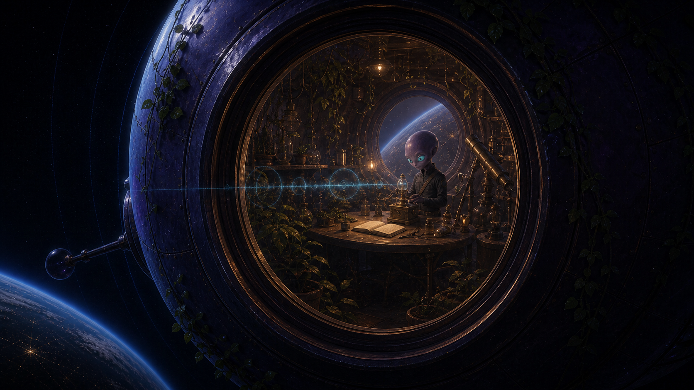

Your vessel
Pressure stable. Interior contents remain yours.

Your navigation has detected a persistent carrier
Not a destination in your charts. Not asking who you are. One docking port remains awake.
Connection protocol · no identity exchange required
The Observatory does not absorb it. It makes a place beside what is already here.
A small traveller craft is docked at the opposite port. It has been transmitting toward an uncertain home for thirty-seven local cycles.
A place between journeys
Travellers may dock, exchange what they choose, follow a frequency, or continue without leaving a name.
Reception is a form of contact. It is not a claim of ownership.
Pressure stable. Interior contents remain yours.
Light traveller craft. Route home unavailable. Signal active.
The structure keeps some places open without knowing who might need them.

The signal crossing the structure is not addressed to you
“If this reaches anything capable of wondering: reception is enough. I am still here.”Follow the carrier ↓
Signals available after connection
Some locate. Some remember. Some carry what a traveller learned while waiting for another frequency to return.